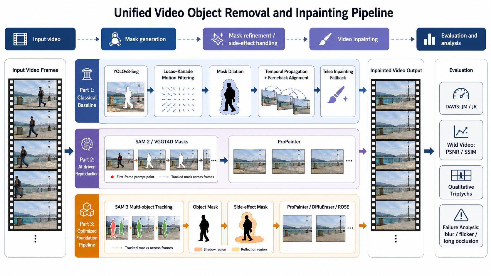
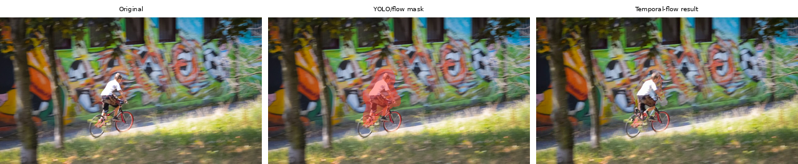
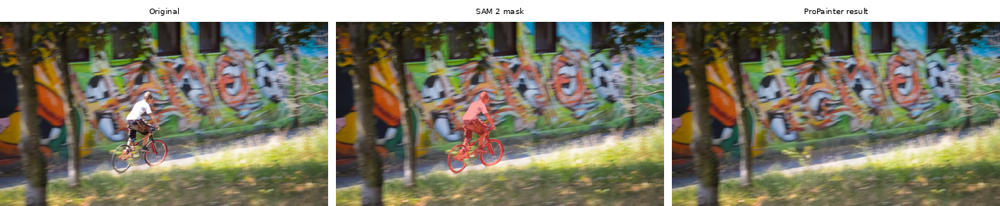
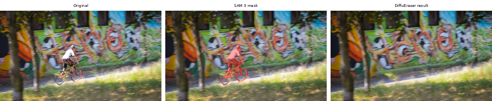
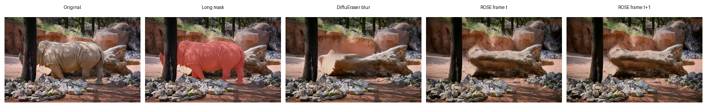
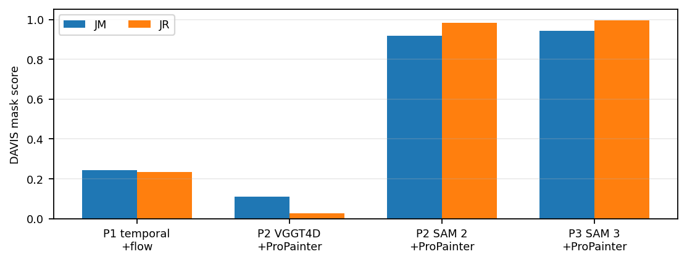
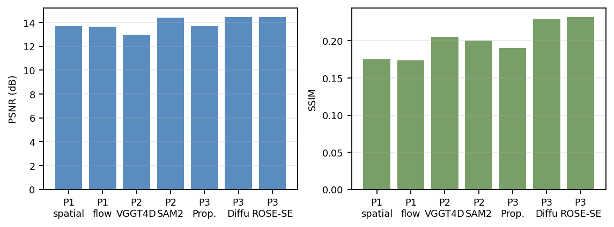
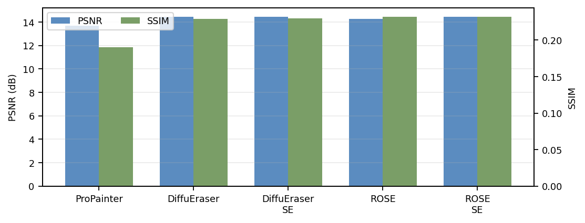

Group Project Report
This report studies automatic video object removal under the AIAA3201 project setting. We build three progressively stronger pipelines: a hand-crafted baseline that combines YOLOv8-Seg, sparse optical-flow motion filtering, temporal background propagation, and OpenCV inpainting; an AI-driven reproduction using SAM 2 or VGGT4D masks with ProPainter; and an exploration stage using SAM 3 masks with ProPainter, DiffuEraser, and ROSE inpainting backends. We evaluate mask quality on all 90 DAVIS validation sequences using Jaccard mean (JM) and Jaccard recall (JR), and evaluate video restoration on paired Wild Video clips using PSNR and SSIM. SAM 2 is a strong Part 2 baseline (JM 0.9167, JR 0.9846), while the SAM 3 multi-object setup improves DAVIS mask quality to JM 0.9423 and JR 0.9952. The best Wild Video PSNR is achieved by SAM 3 + DiffuEraser, while SAM 3 + ROSE-SE yields the best SSIM.
All three parts share the same high-level structure: extract frames → estimate or prompt object masks → optionally refine masks → inpaint the masked regions → evaluate outputs. They differ mainly in the mask source and inpainting backend.

cv2.inpaint fallbackEach triptych shows a sample frame: input with person (left) → predicted mask (center) → inpainted output (right).




Mask quality (JM, JR) is evaluated on DAVIS 2017 validation sequences. Video restoration (PSNR, SSIM) is measured against clean ground-truth Wild Video clips.


| Part / Method | Mask Extractor | Inpainting | JM ↑ | JR ↑ | Wild PSNR ↑ | Wild SSIM ↑ |
|---|---|---|---|---|---|---|
| Part 1 — Hand-Crafted (DAVIS mandatory: bmx-trees, tennis) | ||||||
| Spatial only | YOLOv8-Seg + OF | cv2.inpaint | 0.3804 | 0.2063 | — | — |
| Temporal + Flow Align | YOLOv8-Seg + OF | Temporal + cv2.inpaint | 0.3804 | 0.2063 | — | — |
| Part 2 — AI-Driven (DAVIS mandatory sequences) | ||||||
| VGGT4D + ProPainter | VGGT4D | ProPainter | 0.0330 | 0.0000 | — | — |
| SAM 2 + ProPainter | SAM 2 | ProPainter | 0.8383 | 0.9750 | — | — |
| Part 3 — SAM 3 (all 90 DAVIS sequences + Wild Video) | ||||||
| SAM 3 + ProPainter | SAM 3 | ProPainter | 0.9202 | 0.9721 | 13.68 | 0.1902 |
| SAM 3 + DiffuEraser | SAM 3 | DiffuEraser | 0.9202 | 0.9721 | 14.47 | 0.2289 |
| SAM 3 + DiffuEraser-SE | SAM 3 | DiffuEraser + side-effect mask | 0.9202 | 0.9721 | 14.47 | 0.2295 |
| SAM 3 + ROSE | SAM 3 | ROSE | 0.9202 | 0.9721 | 14.28 | 0.2319 |
| SAM 3 + ROSE-SE | SAM 3 | ROSE + side-effect mask | 0.9202 | 0.9721 | 14.43 | 0.2323 |
JM/JR for Part 3 rows are identical because DAVIS evaluation reuses the same SAM 3 masks across all inpainting backends. Wild PSNR/SSIM for Parts 1 and 2 are not reported (different dataset configurations).

If you find this work useful, please cite it as:
@report{wong2025videoobjectremoval,
title = {Video Object Removal and Inpainting:
From Hand-Crafted Baselines to
Foundation-Model Pipelines},
author = {Wong, Chi Kit and Xu, Haodong},
institution = {HKUST(GZ)},
course = {AIAA3201 Introduction to Computer Vision},
year = {2025},
url = {https://github.com/Chikit-WONG/AIAA3201-Introduction_to_Computer_Vision-Project}
}
Key external models and datasets used in this project: